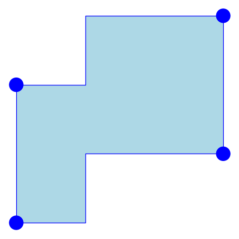
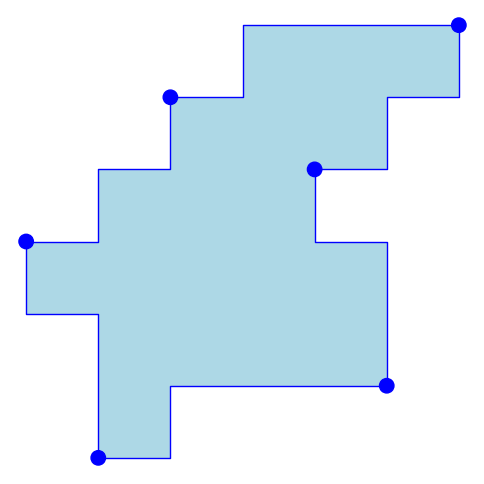

Coordonnées
Département d'informatique
Université du Québec à Montréal
CP 8888, Succ. Centre-ville
Montréal (Québec) H3C 3P8
Tél: 514-987-3000, #5516
Bureau: PK-4525
Courriel: blondin_masse[point]alexandre
[arobase]uqam[point]ca
À propos
J'ai complété mon doctorat en mathématiques-informatique sous la supervision des professeurs Srecko Brlek, de l'Université du Québec à Montréal, au Canada, et de Laurent Vuillon, de l'Université de Savoie, en France.
Depuis le 1er août 2014, je suis professeur adjoint à l'Université du Québec à Montréal, au Canada.
Liens utiles
- Mon profil sur Google Scholar
- Mes dépôts GitLab
- Mes dépôts Bitbucket
- Mes dépôts Github
Combinatoire
[english]Les suites symboliques (ou mots) ont de nombreuses applications autant dans le domaine de la compression de données qu'en géométrie discrète, en passant par la théorie des nombres et la physique. Le mot infini le plus célèbre est probablement le mot de Fibonacci
où la suite {fn} est définie par f0 = b, f1 = a et fn = fn − 1fn − 2 pour n ≥ 2.
Une autre suite remarquable est le mot de Thue-Morse
où la suite {tn} est définie par t0 = a et tn + 1 = tntn et l'opérateur ⋅ est celui qui échange les lettres a et b.
Considérés hors contexte, ces mots peuvent apparaître purement théoriques, mais il existe diverses situations dans lesquels on découvre certaines structures encodées par de telles suites symboliques. Par exemple, le chemin suivant cache le mot de Fibonacci f décrit plus haut (voir [4]). Il possède de fortes propriétés symétriques et des motifs fractaux:
Mes intérêts de recherche se situent principalement en géométrie discrète. J'utilise des outils de la combinatoire des mots pour résoudre différents problèmes. En particulier, j'étudie les palindromes et leur généralisation afin de mieux comprendre la structure des objects combinatoires et géométriques.
Complexité palindromique
Lorsqu'on étudie une suite symbolique donnée, il est particulièrement intéressant de se concentrer sur ses facteurs palindromiques, c'est-à-dire les mots qui ont la propriété de se lire de la même façon de droite à gauche que de gauche à droite. En français, les mots "ressasser" et "radar" sont des palindromes. En géométrie discrète, les palindromes correspondent à des objets possédant des propriétés symétriques telles qu'être invariant sous une rotation d'angle π ou sous différentes réflexions.
Dans [1], Brlek, Hamel, Nivat et Reutenauer ont introduit la notion de défaut palindromique, une statistique sur les mots mesurant leur degré de plénitude (ou richesse) en palindromes. Plus précisément, soit w un mot fini. Alors il est facile de montrer que w contient au plus |w| + 1 palindromes distincts (incluant le palindrome vide ε). Le défaut de w est alors défini par
Un mot est appelé plein si D(w) = 0. Il est bien connu de la communauté que les mots sturmiens et episturmiens sont pleins. De plus, le mot de Thue-Morse n'est pas plein (on dit alors qu'il est lacunaire) et les positions auxquelles on manque les palindromes sont décrites de façon exacte dans [2]. Plus récemment, nous avons démontré que les codages de rotations, une généralisation naturelle des mots sturmiens, sont également pleins [3].
Un opérateur intéressant qui agit sur les palindromes est le clôture palindromique itérée. Soit w un mot fini. On définit la clôture palindromique de w comme le palindrome le plus court ayant w comme préfixe. On la note par w( + ). Par exemple
puisque baab est le plus long palindrome suffixe de abaab. Une autre propriété remarquable du mot de Fibonacci est qu'il peut être construit en appliquant successivement la clôture palindromique et en ajoutant de façon alternée les lettres a et b:
(a)( + ) = a (ab)( + ) = aba (abaa)( + ) = abaaba (abaabab)( + ) = abaababaaba (abaababaabaa)( + ) = abaababaabaababaaba ⋮
Plusieurs généralisations différentes de la clôture palindromique itérée ont été étudiées. Une d'entre elles se concentre sur les pseudopalindromes ou f-palindromes, une généralisation classique des palindromes. Soit f une involution sur un alphabet quelconque. Alors w est appelé f-palindrome si f(w) = w̃, où ⋅̃ dénote l'image miroir d'un mot (les lettres sont écrites dans l'ordre inverse). Par exemple, le mot ACGT, bien connu des biologistes, est un f-palindrome, où f est défini par A↔T et C↔G. Une abondante littérature est consacrée à la combinatoire des f-palindromes, en particulier en bio-informatique. Le lecteur intéressé par le sujet est référé à [5] pour plus de détails concernant mes travaux sur les f-palindromes et la clôture palindromique itérée.
Pavages
La combinatoire des mots fournit de précieux outils pour étudier les objets discrets tels que les polyominos. En particulier, il permet de caractériser les tuiles qui pavent le plan par translation de façon régulière. Beauquier et Nivat ont démontré dans [6] qu'un polyomino P pave le plan de façon périodique s'il admet au moins un mot de contour w (c'est-à-dire un mot sur l'alphabet {a, a, b, b} codant les déplacements droite, gauche, haut et bas respectivement) tel que
où ^⋅ dénote le chemin discret parcouru en sens inverse et au plus un des mots A, B et C est vide. De tels polyominos sont appelés tuiles. Par exemple, les deux polyominos qui suivent sont des tuiles:
|  |  |
Le polyomino à gauche est appelé tuile carrée, puisque le mots C est vide. D'autre part, le polyomino à droite est appelé tuile hexagonale, puisque chaque mot A, B et C sont non vides.
Au cours des dernières années, j'ai considéré principalement la famille des tuiles carrées, plus précisément celles admettant des pavages carrés multiples. Par exemple, la tuile de Fibonacci suivante est un 2-carré (ou tuile double carrée):
puisqu'elle admet deux pavages carrés distincts (indiqués par les points rouges et bleus). En 2008, il a été conjecturé dans [7] qu'il n'existe aucune tuile 3-carrée. Nous avons démontré dans [8] que cette conjecture est effectivement vérifiée. Finalement, nous avons également étudié en détail l'énumération des tuiles 2-carrées dans [9]. La figure ci-bas illustre les 100 premières tuiles doubles carrées :
Il reste plusieurs problèmes ouverts pour tout étudiant souhaitant s'initier à la géométrie discrète et la combinatoire des mots (voir par exemple [9]).
Références
| [1] | S. Brlek, S. Hamel, M. Nivat et C. Reutenauer, On the palindromic complexity of infinite words, International Journal of Foundations Computer Science 15: 2 (2004) 293-306. |
| [2] | A. Blondin Massé, S. Brlek, A. Garon et S. Labbé, Combinatorial properties of f-palindromes in the Thue-Morse sequence, Pure Mathematics and Applications, vol. 19, no. 2-3, 2008, p. 39-52. |
| [3] | A. Blondin Massé, S. Brlek, S. Labbé et L. Vuillon, Return words in codings of rotations, soumis à Theoretical Computer Science le 6 janvier 2010, référence TCS-D-10-00024, accepté, en révision. |
| [4] | A. Blondin Massé, S. Brlek, A. Garon et S. Labbé, Two infinite families of polyominoes that tile the plane by translation in two distinct ways, Theoretical Computer Science, sous presse, 2010, doi: 10.1016/j.tcs.2010.12.034. |
| [5] | A. Blondin Massé, G. Paquin et L. Vuillon, A Fine and Wilf's theorem for pseudoperiods and Justin's formula for generalized pseudostandard words, (JM2010) 13 Journée montoises d'informatique théorique (6-8 septembre 2010, Amiens, France) 8p. |
| [6] | D. Beauquier et M. Nivat, On Translating One Polyomino to Tile the Plane, Discrete and Computational Geometry 6: 575-592 (1991). |
| [7] | X. Provençal, Combinatoire des mots, géométrie discrète et pavages. PhD thesis, D1715, Université du Québec à Montréal, 2008. |
| [8] | A. Blondin Massé, S. Brlek, A. Garon et S. Labbé, Every polyomino yields at most two square tilings, Lattice Path 2010, Italie, 4-7 juillet 2010. |
| [9] | (1, 2) A. Blondin Massé, A. Garon et S. Labbé, Generation of double square tiles, GASCom 2010, Montréal, 2-4 septembre 2010. |